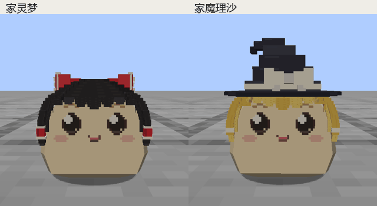
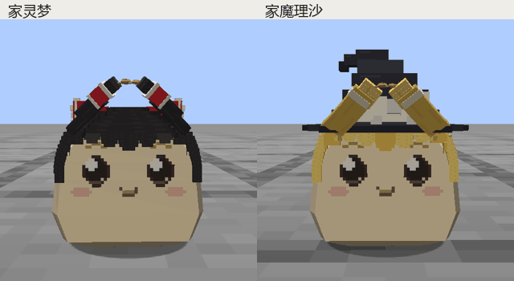
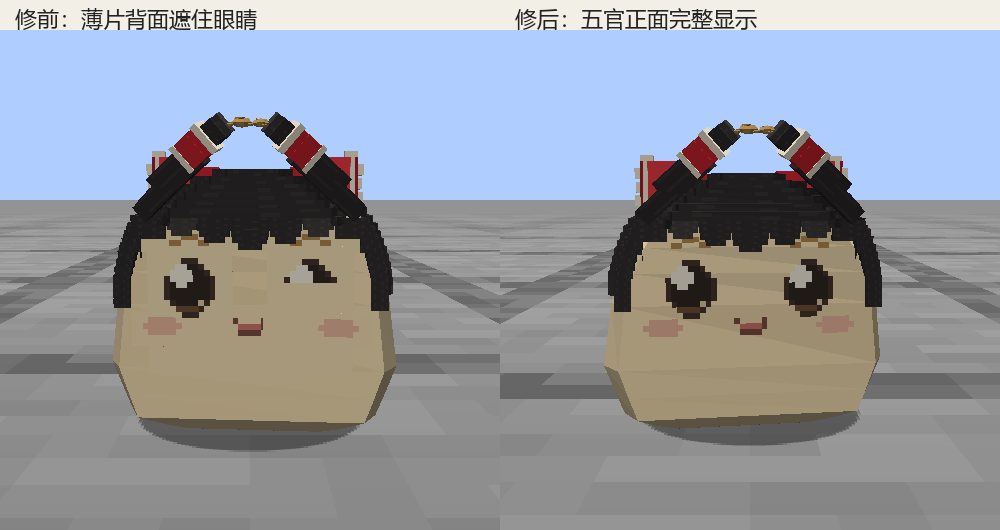
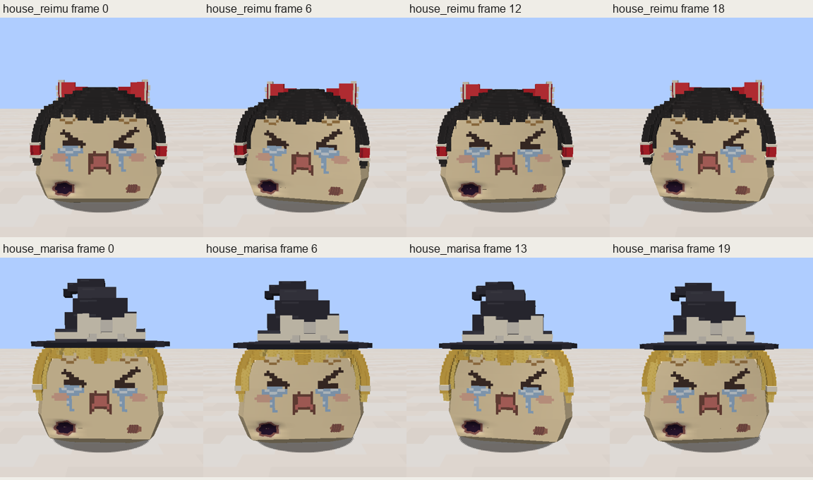
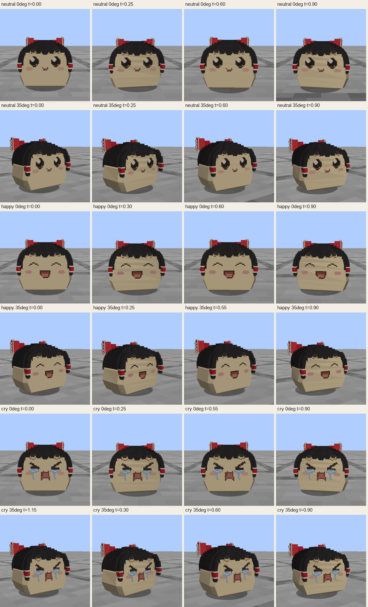
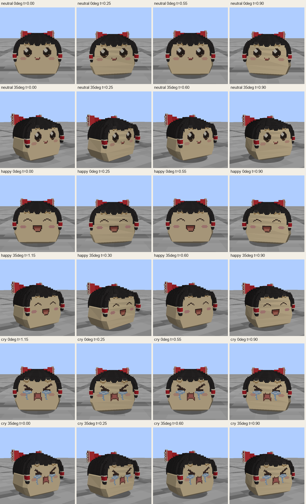
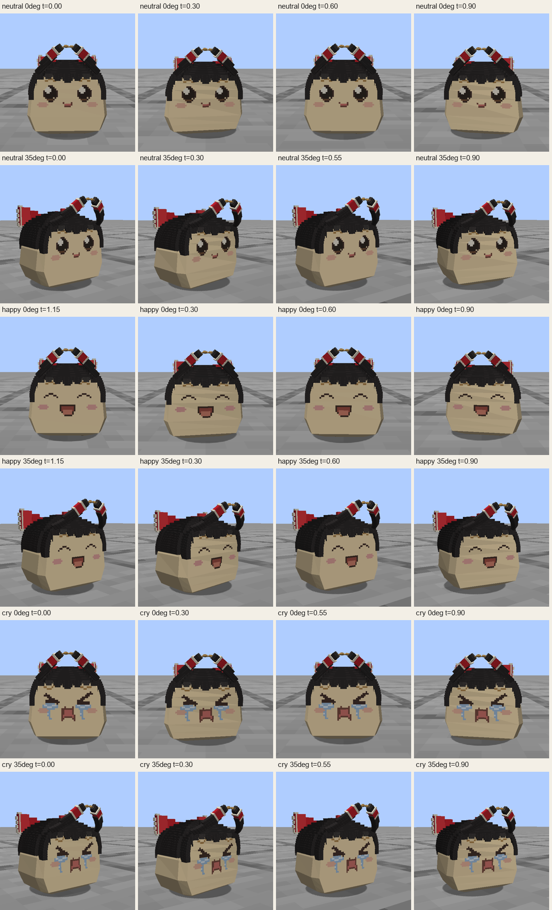
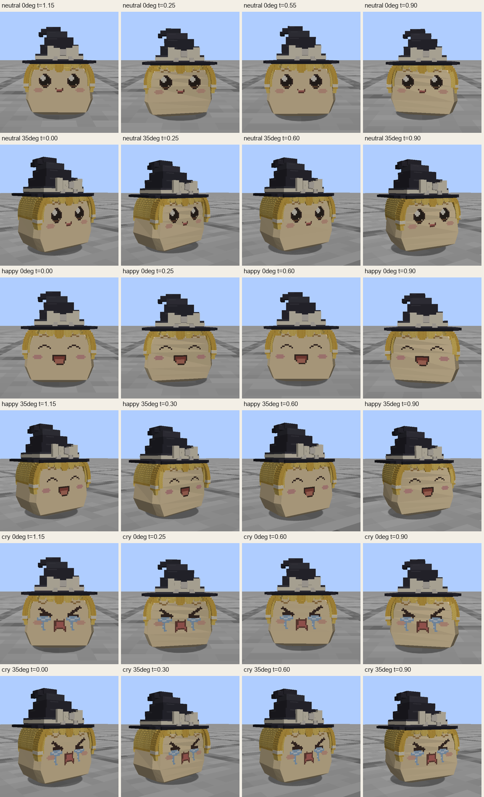
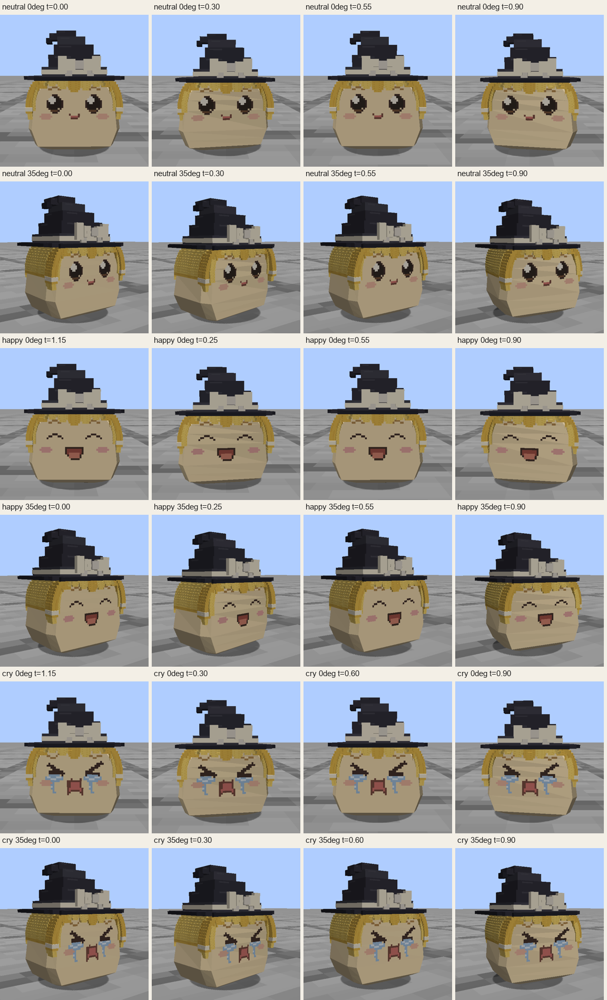
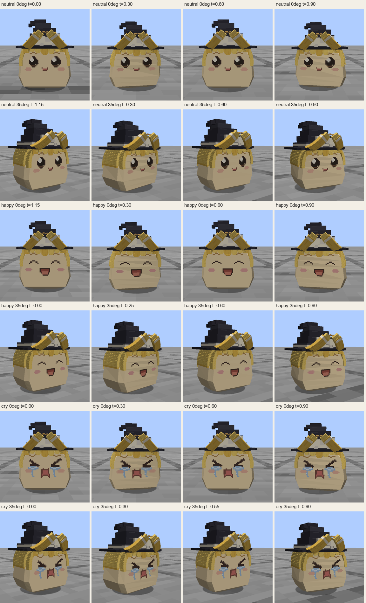

两种家油 · 普通走路 / 慢走 / 携物 · 普通、开心、哭泣表情
36组、768帧实机采集；144个代表相位已核看。验证范围与说明 · 固定产物指纹 · 模组文件

左右画面按实际步态相位配对，均来自本轮游戏录制。

短辫把碎食举至额前，避开眼睛；长度和夹取时序保持不变。

五官薄片背面曾盖住相邻眼睛。游戏和伤口替换网格现在只绘制五官正面。

两家油的伤口表面、五官和行走曲线共同绘制。






此页为固定版本的家油专项验收；不代表全套41项机制、多人或长期运行已通过。